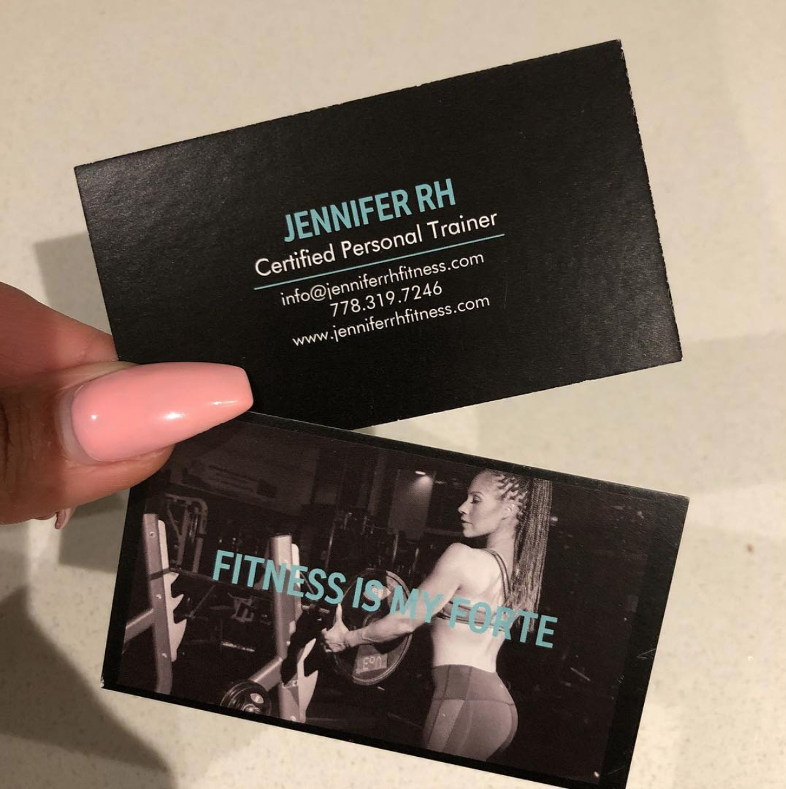

Waitibit
UX/UI, app design practice
UBC Comm 386 Prototyping
(1 week)
Waitibit is a practice app design for my prototyping class (commerce).
The concept of the app focuses on providing real-time accurate data on waiting times and seat availabilities of different establishments ex. cafes, libraries, gyms, community centers, restaurants, etc. that is verified by both customers and business owners/shift managers.
Introduction
Class project.
Role
App design, UX/UI design
Year
2018
The situation.
Have you ever went to a cafe or library only to find out that there’s no more seats or that it’s super busy? Even though you googled beforehand to see reviews of how good their lattes are or if there were study rooms available, and saw that the google estimated time right now is less busy than usual, the information turned out to be inaccurate :(
So now you have to find another location, and you’re awkwardly loitering around looking for the next place - but again, it might be busy too… So what should you do?

Discovery
The exploration.
Recently, I was getting a bit frustrated with going to a cafe or a library only to find out that it is packed - despite planning ahead (I mean, other people are planning smartly too though!). That means then I would have to get to another library or cafe, which may also be full and decreases the amount of time I have for actual work because I have to look and get to another place.
So I thought, what is there as a way - sort of like Yelp reviews but more real-time - to confirm actual waiting times and seat availabilites for any places that would have a wait, seats or is a shared community space?
I went with the direction that this app should primarily focus on getting the users to verify how busy an establishment was, and how it could display the data gathered in an easy to understand way for users (both customers and owners).

Creation
The idea.
From this, I took inspiration from both the Yelp app and Google Forms/Google Materials design as a design guide for my concept.
Mockups.
Based off the new wireframes and IA, we integrated it with the brand guidelines to create a mockup of the finished product.
While Jennifer was happy with our mockups, I personally thought that the mockups could be a little more uniquely designed to create a more creative user experience.
Here is another version of how the site could have looked, if we only had the time and skills then to develop it!
Development
Implementing WordPress.
Once the mockup designs were approved with Jennifer, we went ahead with development. We created a custom WordPress site using a starter theme, creating our own taxonomies and hierarchies. Having a Wordpress site would allow Jennifer the flexibility to change and manager her content as her business grew and changed.
Deliverables
After the site was developed on our local sites, it was time to hand it off to the client on her own hosting site.
In our last week of class, we showed Jennifer in person how to use the WordPress CMS. She really liked the site when she saw the complete project, although we weren't 100% satisfied with some the bugs that remained. Despite small issues (which we tried fixing after the program ended), we took it that she liked her site as she based her business card design off of what we created!
And that wraps up our one month client project, check out the live site here!
Other projects
Design of a task manager + scheduling app with use of AI
A personal site for an award-winning florist
secret secret actually idk yet
how i made dis yeeees